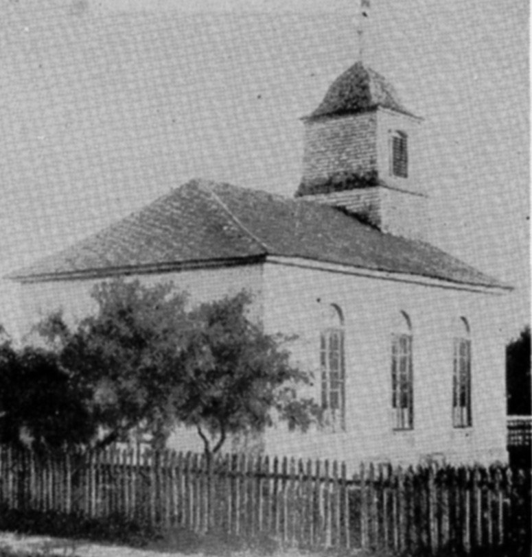
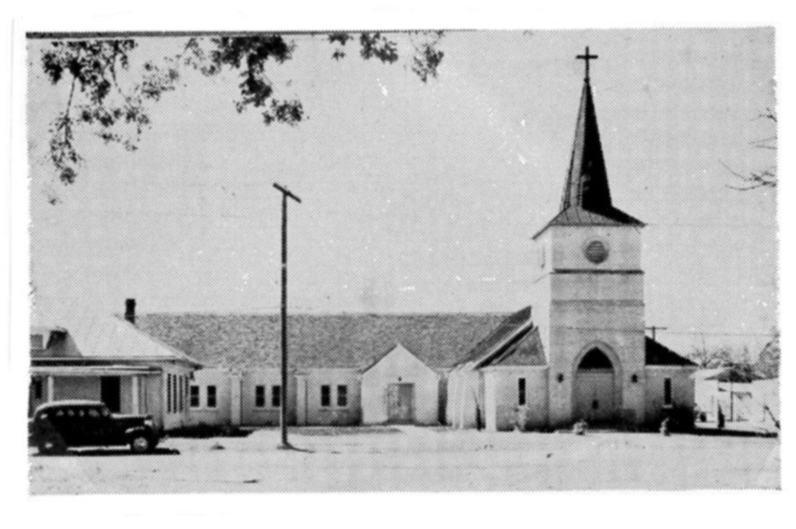

Our History
Many of the German settlers in Henri Castro's colony were Lutherans who worshiped in their homes. On January 29, 1852, the Rev. Christian Oefinger, who had sailed from Bremen, organized Zion with 12 charter members.

The stone church, 1853
Members supplied the rock, sand and timbers, and a $400 loan from the General Synod got construction started. The walls were 18 inches thick, with cypress and mesquite beams held by wooden pegs, an earthen floor and a canvas ceiling. It's believed to be the first Lutheran church in Texas built of stone. Pastor Oefinger also taught Castroville's first public school classes in the church in the 1850s.

Through the years
- 1852Zion organized with 12 charter members.
- 1853Construction of the stone church begins; a stone parsonage is built from the leftover rock.
- 1922A frame parsonage replaces the stone one.
- 1939The stone church gives way to today's brick church, dedicated debt-free on October 15.
- 1949The education annex is dedicated.
- 1953The parsonage is sawed in half and moved to Lorenzo Street.
- 1959–1960The Fuos Haus becomes the church office, and the old George L. Haass Store becomes the youth building.
- 1996The old parsonage becomes the Sunday School building.
- 2000The Texas Historical Commission places a historical marker at the church.
- January 29, 2027Zion turns 175.

Today
The 1939 church still stands on the same lot at 1106 Fiorella Street, where the first stone church stood.
Sources: Texas Historical Commission marker 12327 (2000); Zion's own history page; interment.net survey (2003).